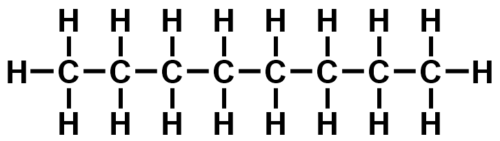
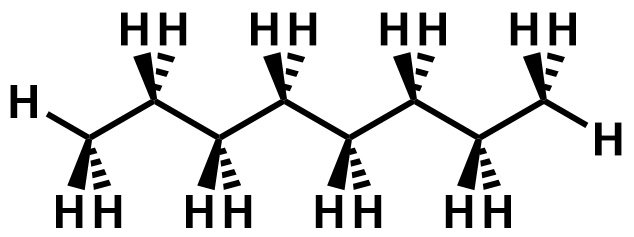

| Top view | Side view |
|---|---|
|  |  |
| Try to rotate the two molecules about the z-axis (by sliding your finger left-right). You find that the two mirror images are non-superposable. You can only align two of the substituents at each double bond carbon at any time. The remaining two substituents on the other double bond carbon will not be aligned. Despite having no chiral centres, 1,3-dichloropropa-1,2-diene exist as a pair of enantiomers, and is chiral. | |